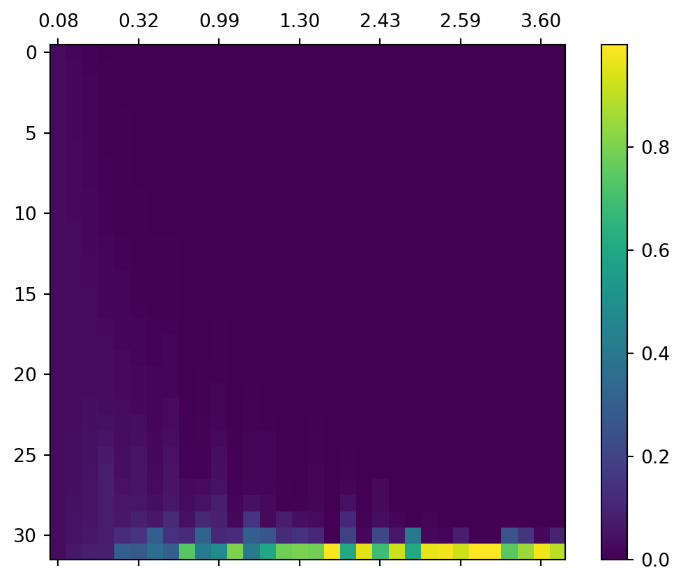
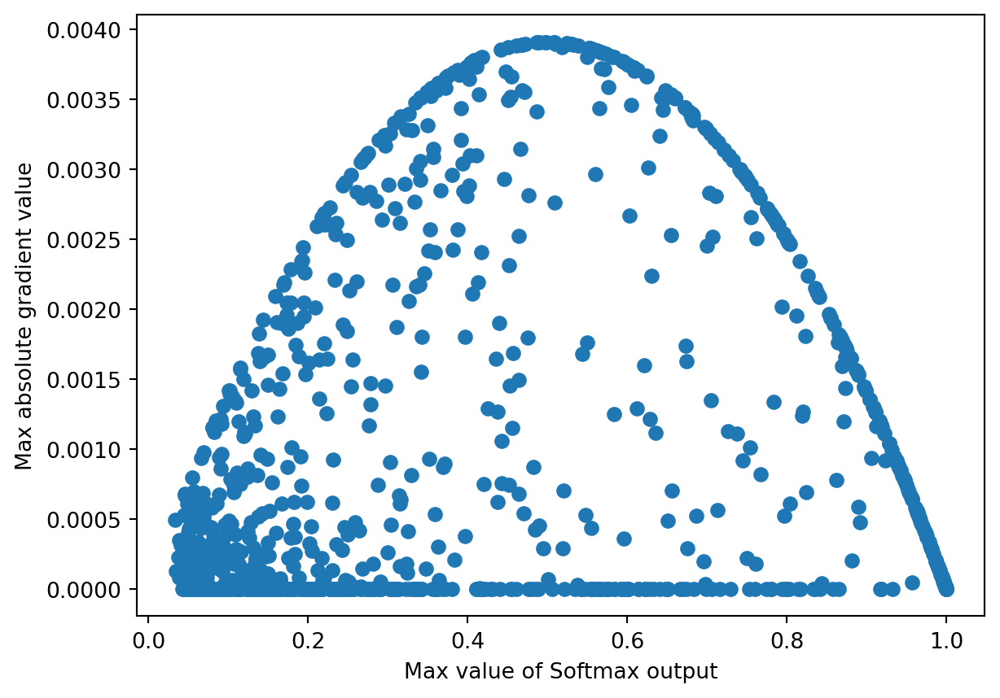

自从 “Attention is All You need” [@vaswani_attention_2017] 这篇文章发布之后，注意力机制开始广为人知。虽然一开始注意力机制被应用于自然语言处理领域，但人们很快发现它也能够用于处理图像、点云等数据结构，并且取得非常好的效果。
本文介绍如何用 PyTorch 实现文章 [@vaswani_attention_2017] 提出的 multi-head attention（MHA）。MHA 是 scaled dot-product attention（SDPA）[@vaswani_attention_2017; @Bahdanau2014NeuralMT] 的改进。既然 MHA 是 SDPA 的 multi-head 版，那么也许将 SDPA 称为单头注意力会比较形象。让我们先从单头注意力开始。
Scaled Dot-product Attention
SDPA 的计算公式如下：
\[ \text{Attention}(Q, K, V) = \text{Softmax}\left(\frac{QK^T}{\sqrt{d_k}}\right)V \tag{1}\]
其中，\(Q\)、\(K\) 和 \(V\) 分别为输入的 query、key 和 value 向量。\(Q\) 的尺寸为 \(L \times E_q\)，\(K\) 的尺寸为 \(S \times E_q\)，\(V\) 的尺寸为 \(S \times E_v\)。
在 Equation 1 中，\(QK^T\) 的计算可以理解为求 query 向量和 key 向量间的”匹配程度”，使得 SDPA 能够根据匹配程度从 value 中取得相关的数据。Softmax 函数在这里起到归一化的作用，使得 SDPA 的计算结果可以视为 V 的加权平均。
注意力机制是一个有趣的设计。RNN（Recurrent Neural Networks）结构面临着长程记忆困难的问题；类似的，CNN（Convolutional Neural Networks）中也存在远距离像素感知困难的问题。SDPA 的特点是，为每一对 query 和 key 都作计算，而不考虑其时间或空间上的位置差距。
我个人的观察是，注意力机制就好像构造了一个”完全二部图”。这个二部图由 \(A\) 和 \(B\) 两个顶点集合组成，其中 \(A\) 集合代表 query，\(B\) 集合代表 key 和 value。\(A\) 和 \(B\) 之间的结点两两之间都有一条边，边的权重由 query 和 key 的”匹配程度”决定。类似 SDPA，全连接层或卷积层也可以表示为二部图，只不过其边的权重是通过训练得到的、固定的值，而在注意力机制中，边的权重是动态的，根据 query 和 key 计算得到的。
Attention 的缩放系数
从 Equation 1 可以看到，在执行 Softmax 函数前，SDPA 使用系数 \(\frac{1}{\sqrt{d_k}}\) 对输入作了缩放。为什么是 \(\sqrt{d_k}\)，而不是其它系数呢？ 本节主要摘录苏剑林的系列文章中的结论，对这个问题作简要的讨论。
Softmax 是一个将向量映射为向量的函数。首先，我们注意到 Softmax 输入向量的方差对于其输出向量的分布有重要影响。
import numpy as np
import torch
import torch.nn.functional as F
import matplotlib.pyplot as plt
np.random.seed(0)
length = 32
samples = []
n_samples = 32
for i in range(n_samples):
m = i / n_samples * 10
x = np.random.randn(length) * m
y = np.array(torch.softmax(torch.tensor(x), dim=0))
samples.append((sorted(y), np.var(x)))
samples.sort(key=lambda x: x[1]) # 按方差排序
fig = plt.figure()
ax = plt.gca()
cax = ax.matshow(np.array([s for s, i in samples]).transpose())
ax.set_xticklabels([f'{i:.2f}' for s, i in samples])
fig.colorbar(cax);/tmp/ipykernel_3631103/3983590926.py:13: DeprecationWarning:
__array__ implementation doesn't accept a copy keyword, so passing copy=False failed. __array__ must implement 'dtype' and 'copy' keyword arguments. To learn more, see the migration guide https://numpy.org/devdocs/numpy_2_0_migration_guide.html#adapting-to-changes-in-the-copy-keyword
/tmp/ipykernel_3631103/3983590926.py:19: UserWarning:
set_ticklabels() should only be used with a fixed number of ticks, i.e. after set_ticks() or using a FixedLocator.

由 Figure 1 可见，Softmax 函数的输入向量方差越小，则输出越接近 \(\vec 0\)；反之，Softmax 的输出越接近 one-hot 编码，即只有一个元素是 1，其它元素都接近 0。然而，这两种极端情况都容易引发梯度消失问题。（这在我的《Softmax 函数的性质》一文中已经给出了推导。）
为了避免梯度消失，我们既不希望 Softmax 的输出接近 \(\vec 0\)，也不希望其成为 one-hot 编码。下面的程序通过直观的方式演示了其中的原因：
# 向量的长度
length = 128
# 缩放系数，影响输入向量的方差大小
scales = [2**(i / 3) for i in range(10)]
xs = []
ys = []
for _ in range(1000):
# 随机选择一个缩放系数
m = np.random.choice(scales)
# 随机初始化 Softmax 的输入，并缩放
x = torch.tensor(np.random.randn(length) * m, requires_grad=True)
# 执行 Softmax 函数
y = torch.softmax(x, dim=0)
# 横轴为 max(y)
xs.append(y.max().item())
label = torch.rand(y.shape)
loss = torch.abs(label - y).mean()
loss.backward()
# 纵轴为梯度绝对值的最大值
ys.append(x.grad.abs().max().item())
plt.scatter(xs, ys)
plt.xlabel('Max value of Softmax output')
plt.ylabel('Max absolute gradient value')
plt.show()
从 Figure 2 可以看到，当 Softmax 的输入接近 \(0\) 向量或者 one-hot 向量的时候，容易发生梯度消失现象，此时梯度的绝对值接近 \(0\)。
综上所述，为尽量避免 Softmax 的梯度消失，控制输入向量的方差很重要。假设 \(\vec q\) 和 \(\vec k\) 都是 \(0\) 均值的，二者相互独立，方差分别为 \(v_q\) 和 \(v_k\)，不难证明它们的内积 \(\vec q^T \vec k\) 的数学期望为 \(0\)。
\[ \begin{align*} \mathbb{E}(\vec q^T \vec k) &= \mathbb{E}\left(\sum_i q_i k_i\right) \\ &= \sum_i \mathbb{E}(q_i k_i) \\ &= \sum_i \mathbb{E}(q_i) \mathbb{E}(k_i) \\ &= \sum_i 0 \cdot 0 \\ &= 0. \end{align*} \]
\(\vec q^T \vec k\) 的方差为 \(d_k v_q v_k\)。
\[ \begin{align*} \text{Var}(\vec q^T \vec k) &= \text{Var}\left(\sum_{i=1}^{d_k} (q_i k_i)\right) \\ \end{align*} \]
假设 \(\vec q^T \vec k\) 的任意两个维度都是独立同分布的，那么
\[ \begin{align*} \text{Var}(\vec q^T \vec k) &= d_k \text{Var}(q_i k_i) \\ &= d_k (\mathbb E(q_i^2 k_i^2) - (\mathbb E(q_i k_i))^2)\\ &= d_k (\mathbb E(q_i^2)\mathbb E(k_i^2) - (\mathbb E(q_i) \mathbb E(k_i))^2)\\ &= d_k (\mathbb E(q_i^2)\mathbb E(k_i^2) )\\ &= d_k \left( \text{Var}(q_i) \text{Var}(k_i) \right) \\ &= d_k v_q v_k \end{align*} \]
于是 \(\text{Var}(\vec q^T \vec k / \sqrt{d_k}) = v_q v_k\)。
因此，假设输入的 query 和 value 是标准正态分布（均值为 \(0\)，方差为 \(1\)），那么经过 \(1/\sqrt{d_k}\) 的缩放处理，就能保持 softmax 的输入也是标准正态分布，避免方差过小或过大。
代码实现
在充分理解清楚 SDPA 的计算公式的前提下，用 PyTorch 实现它就不困难。需要注意的是 Equation 1 中没有体现 attention mask，但我们要在代码实现中支持它。attention mask 用于在训练中阻止模型看到未来的 token，这对训练聊天机器人、机器翻译模型等生成式模型是必要的。
在实现中，mask 矩阵的值会被加到注意力矩阵上。如果 mask 矩阵中有一个值非常小（接近 \(-\infty\)），那么对应的注意力就会在 softmax 中被抑制。
下列代码实现了 scaled dot-product attention：
import torch
import torch.nn as nn
import torch.nn.functional as F
import numpy as np
def my_scaled_dot_product_attention(q, k, v, mask=None):
embed_dim = q.shape[-1]
attn_weights = torch.einsum('nle,nse->nls', q, k)
attn_weights /= np.sqrt(embed_dim)
if mask is not None:
attn_weights += mask
attn_weights = torch.softmax(attn_weights, dim=-1)
ret = torch.einsum('nls,nse->nle', attn_weights, v)
return ret, attn_weights让我们看看实现的 my_scaled_dot_product_attention 函数能不能正常运行：
batch_size = 1
length = 2
embed_dim = 4
q = torch.rand((batch_size, length, embed_dim))
k = torch.rand((batch_size, length, embed_dim))
v = torch.rand((batch_size, length, embed_dim))
mask = torch.rand((length, length))
ret, attn_weights = my_scaled_dot_product_attention(q, k, v, mask)
print('attention 操作返回结果：', ret)
print('attention 矩阵为：', attn_weights)attention 操作返回结果： tensor([[[0.1517, 0.4868, 0.3622, 0.5209],
[0.2097, 0.4212, 0.5240, 0.5255]]])
attention 矩阵为： tensor([[[0.4420, 0.5580],
[0.6800, 0.3200]]])一个检查实现正确性的小技巧是，观察返回 attention 矩阵的各列之和是否为 1。如果不为 1，说明实现有问题。
assert torch.all(attn_weights.sum(-1) - 1 < 1e-6)在准备好 scaled dot product attention 的基础上，我们便可以着手实现 multi-head attention 了。
Multi-head Attention
根据原论文描述，MHA 的实现为：
\[ \text{MultiHead}(Q, K, V) = \text{Concat}(\text{head}_1, ..., \text{head}_h)W^O \]
其中 \(\text{head}_i = \text{Attention}(QW^Q_i, KW^K_i, VW^V_i)\)。据此可知，MHA 操作为：
- 将 query、key 和 value 拆分成若干个 head，对这些 head 分别作线性变换；
- 对每个 head 分别执行 scaled dot-product attention；
- 将所有 head 的 attention 的结果合并，经过一层线性变换后返回。
通过在多个 head 上执行 attention，MHA 允许模型在不同的子空间收集不同位置的信息，增加了 attention 机制的表达能力。
代码实现如下：
class MyMultiheadAttention(nn.Module):
def __init__(
self,
embed_dim,
num_heads,
):
super().__init__()
self.embed_dim = embed_dim
self.num_heads = num_heads
self.in_proj_weight = nn.Parameter(
torch.rand((3 * embed_dim, embed_dim))
)
self.in_proj_bias = nn.Parameter(
torch.rand((3 * embed_dim))
)
self.out_proj = nn.Linear(embed_dim, embed_dim)
def forward(self, query, key, value, attn_mask=None):
L, N, q_dim = query.shape
S, N, k_dim = key.shape
S, N, v_dim = value.shape
assert self.embed_dim % self.num_heads == 0
weight_query, weight_key, weight_value = self.in_proj_weight.chunk(3)
bias_query, bias_key, bias_value = self.in_proj_bias.chunk(3)
query = F.linear(query, weight_query, bias_query)
key = F.linear(key, weight_key, bias_key)
value = F.linear(value, weight_value, bias_value)
# L, N, E -> N*n_heads, L, E/n_heads
query = query.view(L, N * self.num_heads, -1).permute(1, 0, 2)
key = key.view(S, N * self.num_heads, -1).permute(1, 0, 2)
value = value.view(S, N * self.num_heads, -1).permute(1, 0, 2)
out, attn_weights = my_scaled_dot_product_attention(query, key, value, mask=attn_mask)
out = out.permute(1, 0, 2).reshape(L, N, -1)
attn_weights = attn_weights.reshape(N, -1, L, S).mean(1)
out = self.out_proj(out)
return out, attn_weights首先，我们先比较一下本文实现的 multi-head attention 和 torch 官方实现的参数设置。我们将会看到所有参数名称和参数尺寸都是一致的。这表明我们的 multi-head attention 与 torch 的官方实现兼容。
batch_size = 2
embed_dim = 16
num_heads = 4
torch_mha = nn.MultiheadAttention(embed_dim, num_heads)
for n, p in torch_mha.named_parameters():
print(n, p.shape)
print('')
my_mha = MyMultiheadAttention(embed_dim, num_heads)
for n, p in my_mha.named_parameters():
print(n, p.shape)in_proj_weight torch.Size([48, 16])
in_proj_bias torch.Size([48])
out_proj.weight torch.Size([16, 16])
out_proj.bias torch.Size([16])
in_proj_weight torch.Size([48, 16])
in_proj_bias torch.Size([48])
out_proj.weight torch.Size([16, 16])
out_proj.bias torch.Size([16])接下来，我们检查我们实现的 MHA 和 torch 版本 MHA 的输出是否完全一致。在进行比较之前，我们先进行参数的复制，保持两个模块的参数完全相同。
my_mha_parameters = dict(my_mha.named_parameters())
for n, p in torch_mha.named_parameters():
my_mha_parameters[n].data.copy_(p)
assert torch.all(p == my_mha_parameters[n])下列代码对函数的输出进行检查：
query = torch.rand((length, batch_size, embed_dim))
key = torch.rand((length, batch_size, embed_dim))
value = torch.rand((length, batch_size, embed_dim))
# prepare mask
attn_bias = torch.zeros(length, length, dtype=query.dtype)
temp_mask = torch.ones(length, length, dtype=torch.bool).tril(diagonal=0)
attn_bias.masked_fill_(temp_mask.logical_not(), float("-inf"))
attn_bias.to(query.dtype)
ret, attn_weights = my_mha(query, key, value, attn_mask=attn_bias)
ret2, attn_weights2 = torch_mha(query, key, value, need_weights=True, attn_mask=attn_bias)
error = torch.mean(torch.abs(ret - ret2)).item()
error2 = torch.mean(torch.abs(attn_weights - attn_weights2)).item()
print(f'Difference: {error:.4f}, {error2:.4f}')
assert error < 1e-6 and error2 < 1e-6Difference: 0.0000, 0.0000检查结果表明我们实现的 multi-head attention 输出与 torch 官方实现的完全一致，验证了代码的正确性。
练习题
改变 MHA 的 heads 数会如何改变 MHA 的参数量？
MHA 的参数量与 head 的数量无关，这从代码中也能很容易看出来。
实验也验证了这一点。
embed_dim = 16
num_heads = 4
mha1 = nn.MultiheadAttention(embed_dim, num_heads)
mha2 = nn.MultiheadAttention(embed_dim, num_heads * 2)
def count_parameters(m):
c = 0
for p in m.parameters(): c += p.numel()
return c
print(count_parameters(mha1), count_parameters(mha2))1088 1088在自注意力机制中，MHA 的时间复杂度是多少？和 head 数有关吗？
首先，由 Equation 1 可以看出，单头注意力机制的时间复杂度是 \(O(n^2 d)\)，其中 \(n\) 为序列长度，\(d\) 为特征维度。
接下来考虑 MHA 的时间复杂度。MHA 先对输入向量作线性变换得到 Q、K、V，这部分的时间复杂度为 \(O(n d^2)\)；然后这些特征被拆分为 \(h\) 个 head，分别做 attention，这个部分的时间复杂度为 \(O(n^2 \frac{d}{h} \times h)\)，其中 \(h\) 为 head 数。最后 MHA 再做一次线性变换，时间复杂度为 \(O(n d^2)\)。
因此，总的来看，MHA 的时间复杂度为 \(O(n^2 d + n d^2)\)，与 head 数无关。
从 Stack Overflow 的这个网页可以看到一些有趣的讨论。
总结
推荐阅读：
- torch 官方的 scaled dot-product attention 文档中简要介绍了一种 scaled dot-product attention 的 Python 实现方式。
- 论文 MQA [@Shazeer2019MQA] 中的 Background 一节对各类 Attention 有详细介绍，推荐一读。